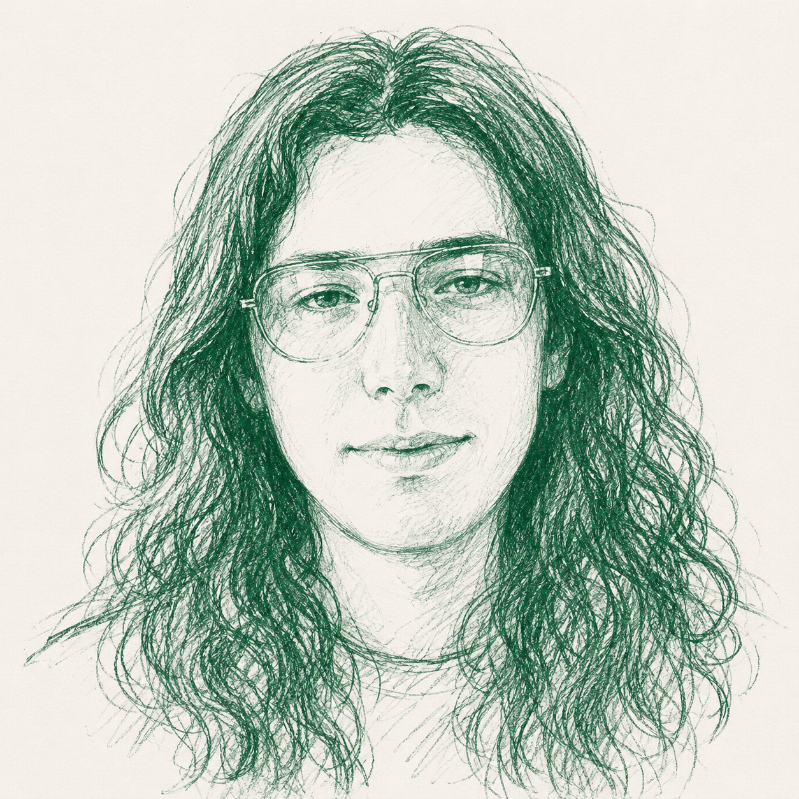

Danny Wardle
PhD Candidate, Australian National University
I am a PhD candidate in philosophy at the Australian National University, supervised by Nicholas Southwood. The aim of my research is a series of papers on social metaphysics — investigating questions about how social groups persist through change, where social groups are spatiotemporally located, whether groups can persist without members and so on. From 2021–2024 I studied at the Australian Catholic University’s now-disestablished Dianoia Institute of Philosophy, and before that took a Master of Philosophy at the University of Adelaide with a thesis on the metaphysics of persistence titled Opening a Can of Spacetime Worms: The Metaphysics of Persistence.
I am an Ordinary Member of the Australasian Association of Philosophy (AAP) Postgraduate Committee and I manage the website for Sagacity, a venue for public philosophy by postgraduate students. I was previously the Convenor of the AAP Postgraduate Committee in 2020 and 2025. I also write on public policy and politics — weekly at my Substack Plurality of Words, and on occasion for outlets like Jacobin.